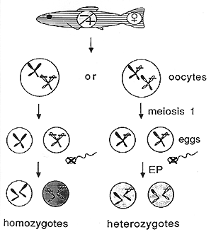
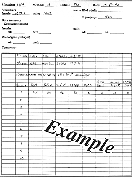

CHAPTER 7 - GENETIC METHODS
Production of Homozygous diploid embryos
(Source: R. Andrews and T. Ellis)
There are two basic methods for production of homozygous diploid embryos, Heat shock and Early pressure. Both methods rely upon fertilization of embryos with UV inactivated sperm as described above.
The first method uses a heat shock to inhibit the first mitotic division of the embryo. Streisinger et al. (1981) report that 10-20% of embryos treated with heat shock develop into adults.
Overview of heat shock
1. Proceed with in vitro fertilization using UV inactivated sperm as described above.
2. At 13 min after fertilization (at 28.5C), heat shock the embryos for 2 min by transferring them to 41C water.
3. Cool them rapidly to 28.5C.
Detailed heat shock procedures
Materials Needed:
- 2 water baths, one set at 28.5°ree;C, one set at 41.4°ree;C
- 3 or 4 1-liter beakers filled with egg water
- Distilled water
- Egg water
- Heat shock vials
- Electric stirrer that can be immersed
- Thermometer
- Timer
- Data pad
- Pasteur pipettes with narrow ends removed
Preparation:
1. Soak the heat shock vials over night in distilled water.
2. Fill water baths with distilled water.
3. Place one 1 liter beaker in the 41C bath on a magnetic stirrer.
4. Fill this beaker with egg water to the level of the surrounding bath water.
5. Place 2 or 3 1 liter beakers in the 28.5C bath and fill them with egg water to the level of the surrounding bath water.
6. Remove the heat shock vials from the distilled water and allow them to dry on paper towels.
7. Prepare data sheet. (see Example below)
8. Place a few of the heat shock vials into one of the beakers in the 28.5C bath, beginning with the vial marked '1'.
Procedure:
1. Squeeze female fish as for Embryo
Production By
In Vitro Fertilization and activate them with UV
sperm.
2. As the 1 ml of egg water is added to begin activation, start the timer. Mark this dish #1. Each successive batch of eggs obtained should be marked in numerical order.
3. Add more egg water to the fertilized eggs after about 30 seconds.
4. About 8 minutes after fertilization, transfer embryos from their dish to the appropriately numbered heat shock vial in the 28.5C bath. Each batch of eggs treated should be transferred to the vial marked with the same number as the number on the dish in which the eggs are fertilized.
5. At 13 min after activation, transfer the vial containing the embryos to the 41C water bath.
6. At 15 min after fertilization transfer the vial from the 41C bath to the 28.5C bath.
7. Repeat this for the other batches of eggs. This is different from EP in that you can continue squeezing females while you are waiting to transfer the embryos from one bath to the other. Because of this, you will not restart the timer for each fertilization. For each subsequent fertilization simply record the time shown on the running timer as Time of Activation. At the time you transfer the eggs from the 28.5C bath to the hot bath add 2 minutes to that time to find the time to transfer the eggs from the hot bath back to the 28.5C bath. (Again, see Sample data sheet).
8. Throughout the experiment you should be monitoring the temperature of the water baths, especially the 41.4C water bath. Do this by putting the thermometer in the beakers themselves not into the surrounding water of the baths. If the temperature is a little high you may want to add a little room temperature egg water to the beaker. If the temperature is a little low, you can remove a little water from the beaker. If the baths are holding steady at a temperature that is either too high or too low, you may need to adjust the temperature setting on the circulators of the baths.
9. When you are done squeezing fish, leave the heat shock vials in the 28.5C bath until all the embryos have had time to divide at least once. Then remove the first vial, and transfer the embryos to beakers or dishes for sorting the fertile eggs from the infertile eggs. Record the numbers of both classes on your data sheet. Repeat this for all the other vials in the bath.
The second method uses pressure to inhibit the second meiotic division of the embryo. This method produces diploid embryos whose only genetic contribution comes from the mother. They are not homozygous, however, due to recombination during the first meiotic division. The frequency of appearance of any given trait in these gynogenetic diploid embryos can be used to calculate the frequency of recombination and the gene-centromere distance (Streisinger et al., 1986). Carry out all procedures at 28.5C.
Overview of early pressure
1. Proceed with Embryo
Production By In Vitro Fertilization using UV inactivated
sperm as described above.
2. Immediately transfer the fertilized eggs to a glass vial (with a plastic snap cap) filled to the brim with egg water. Cover the open end of the vial with a thin sheet of latex rubber and snap the top (into which a hole has been cut) onto the vial over the rubber.
3. Place the vial in a hydraulic press and at 1.4 min after fertilization raise the pressure to 8,000 p.s.i. (Note that many presses are calibrated to read the pressure exerted on a 2-inch diameter piston, and readings must be converted to p.s.i.)
4. Beginning at 6 min after fertilization, gradually release the pressure over a period of 1 min.
Detailed early pressure procedure
Materials Needed:
- French press
- Pressure vials with rubber tops, and plastic lids
- Pressure cylinders
- Egg water
- Pasteur pipettes with the narrow ends removed
- Pipette bulbs
- Timer
- UV inactivated sperm
Preparation:
Procedure:
1. Obtain eggs from the females as for Embryo
Production
By In Vitro Fertilization.
2. When eggs are obtained, activate them with UV sperm, starting the timer at the same time the 1 ml of water is added.
3. Allow a few seconds for activation.
4. Add more water, being sure to swirl the eggs to the center of the dish.
5. Using the cut Pasteur pipette transfer the fertilized eggs to the pressure vials.
6. If needed, add more egg water to the vials so that they are almost overflowing, leaving a bead of water at the lip of the vials.
7. Place a rubber top over the bead of water and secure the plastic lid over the rubber.
8. Place the vial(s) upside down in the pressure cylinder, adding more egg water to refill the cylinder. Put the top on the cylinder securely.
9. Place the cylinder in the press with the plunger up and apply 8,000 lbs/sq. in.
10. Steps 4�9 must be accomplished 1.4 min after fertilization.
11. Leave the cylinder in the press until 6 min after the time of activation (for a total time of 4.6 min of pressure).
12. At 6 min after activation, remove the cylinder from the press, and remove the vials from the cylinder. Carefully dry the vials to prevent cooling of the embryos.
13. Reset the cylinder at the #4 mark and refill it with egg water.
14. Prepare the next vials by partially filling them with egg water as needed.
15. Repeat for all the batches of eggs.
NOTE: The cylinder will take up to 3 vials at a time, so you may want to delay fertilization of eggs a few minutes to see if other females already in the tricaine give eggs. This will help speed things up by treating more batches at one time. Also, remember once the press is being used do not put any more fish in the tricaine until the treatment is completed. Allowing fish to stay in the anesthetic too long can kill them. Secondly, if you squeeze fish while the press is being used, and get eggs, they may be too dry to be viable by the time the press can be used again.

Figure 2 Method for production of diploid offspring by parthenogenesis using early pressure (EP). Recessive mutations will be observed in homozygotes, but not in heterozygotes produced by meiotic recombination during meiosis 1. (From Kimmel, 1989.)

Figure 3. Sample data sheet
The Zebrafish Book